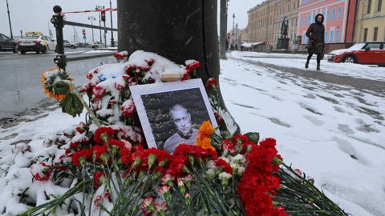

Por que a Rússia decidiu invadir a Ucrânia em 24 de fevereiro de 2022? A resposta a essa pergunta varia de acordo com quem a responde. Leia este resumo feito pela BBC News Brasil e clique nos links destacados no texto para se aprofundar nos temas.
Entre as principais razões apontadas, estão: a expansão da Otan pelo Leste Europeu, a possibilidade de adesão da Ucrânia à aliança militar, a contestação ao direito da Ucrânia à soberania independente da Rússia e o desejo de Vladimir Putin de restabelecer a zona de influência da União Soviética.

Por um lado, a Rússia diz querer impedir o que classifica de cerco à sua fronteira com a possível adesão da Ucrânia à Otan, aliança militar de 30 países, que se expandiu pelo Leste Europeu, incluindo hoje 14 países do ex-bloco comunista.
Putin acusa ainda, sem provas, o governo ucraniano de genocídio contra ucranianos de origem étnica russa que vivem nas regiões separatistas de Donetsk e Luhansk. Ele alega que a invasão tenta "desmilitarizar e desnazificar" a Ucrânia, o que pode servir de justificativa para uma eventual deposição do atual governo ucraniano.
Por outro lado, a Ucrânia e outros observadores veem na guerra uma tentativa da Rússia restabelecer a zona de controle e influência da antiga União Soviética, algo visto como desrespeito à soberania da Ucrânia, que deveria ter o direito de decidir seu destino e suas alianças.
Fonte: https://www.bbc.com/portuguese/internacional-60606340
Kostroma não é um mau lugar para analisar os efeitos da guerra da Ucrânia na Rússia. Essa cidade abriga um célebre regimento que leva seu nome e esteve na linha de frente de todas as principais batalhas da campanha do Kremlin contra seus vizinhos.
O 331º Regimento de Paraquedistas, muitas vezes chamado de Regimento Aerotransportado de Kostroma, tem sido alvo de investigações do programa Newsnight, da BBC, desde pouco tempo depois da invasão da Ucrânia, em fevereiro de 2022.
As investigações revelaram o preço pago pelo regimento e sua comunidade local. A BBC havia confirmado 39 mortes até abril do ano passado, 62 até o fim de julho, e agora esse número chega a 94.
